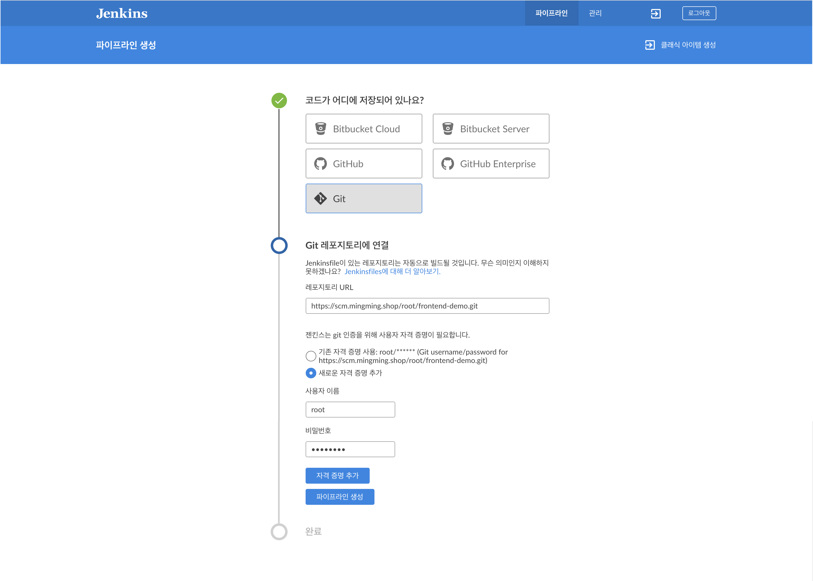
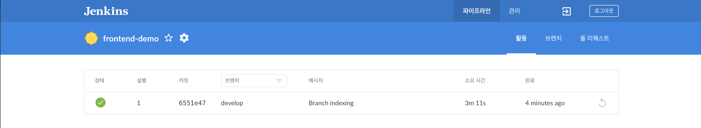
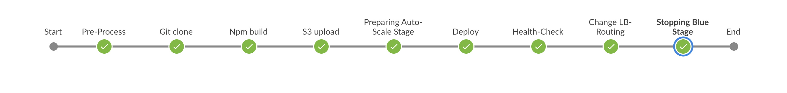

Blue green jenkins 구성
1. jenkins pipeline 생성 (Blue ocean)
1-1) 배포 진행 선행작업
- application(frontend) 프로젝트에 JenkinsFile 이 설정되어 있어야 한다.
- code-deploy 의 어플리케이션과 그룹이 정상적으로 생성되어 있어야 된다.
- code-deploy 가 정상 수행 가능하도록 프로젝트에 appspec.yml이 정상적으로 설정되어 있어야 한다.
(appspec.yml 파일은 code-deploy에서 배포시에 사용하는 파일)
1-2) 파이프라인 생성
- '블루 오션 열기' 좌측 메뉴 클릭하여 파이프라인 생성 
- 배포 결과 확인 
2. jenkins blue-green 배포
2-1) 블루 그린 배포 파이프라인

2-2) 파이프라인 설명
JenkinsFile 참조
pipeline {
agent any
stages {
stage('Pre-Process') {
사전 준비 단계로 배포에 필요한 변수값 셋팅한다. (blue, green 사용 변수)
}
stage('Git clone') {
GitLab에서 frontend 프로젝트 clone 받는다.
}
stage ('Npm build') {
git에서 받은 frontend 프로젝트 배포 파일을 생성한다.
}
stage ('S3 upload') {
frontend 프로젝트 배포 파일을 zip 파일로 변경하여, S3에 저장한다.
}
stage('Preparing Auto-Scale Stage') {
blue 가 사용인 경우 green Auto-scaling group을 최소 단위로 활성화 시킨다.
}
stage('Deploy') {
AWS CodeDeploy를 실행하여, green에 frontend 를 배포한다.
}
stage('Health-Check') {
AWS CodeDeploy 배포 완료를 기다린다.
}
stage('Change LB-Routing') {
ALB에 맵핑되어 있는 blue와 green 의 target group을 변경하여 새로 배포돠어 있는 green을 사용가능하게 한다.
}
stage('Stopping Blue Stage') {
기존에 사용중인 blue 영역을 정지시킨다.
}
}
}